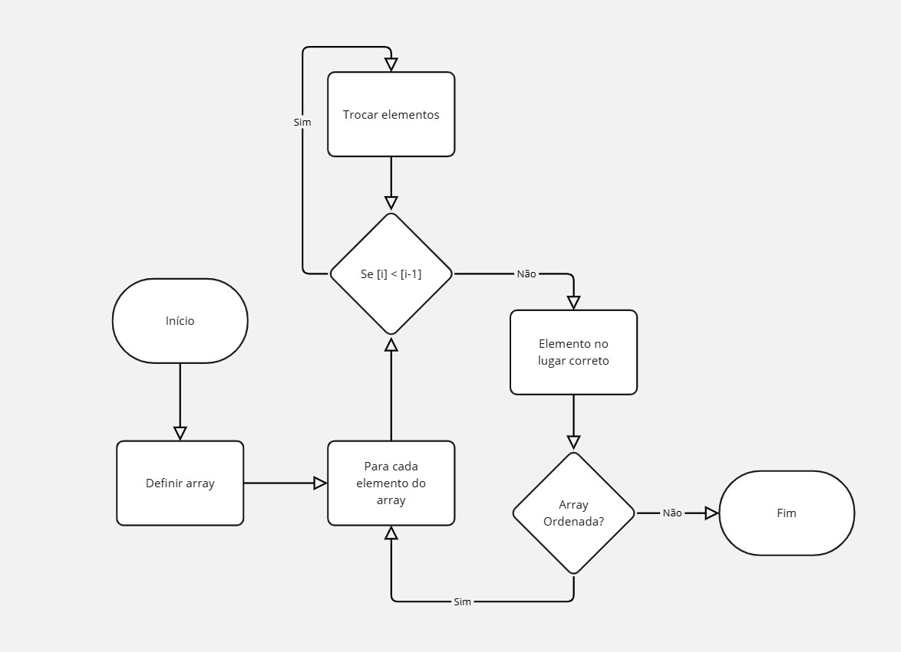
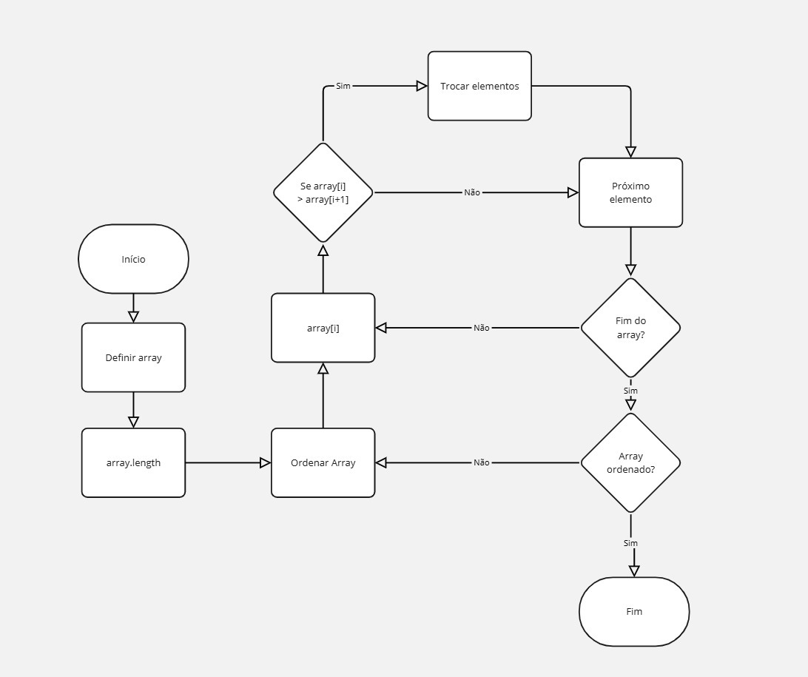
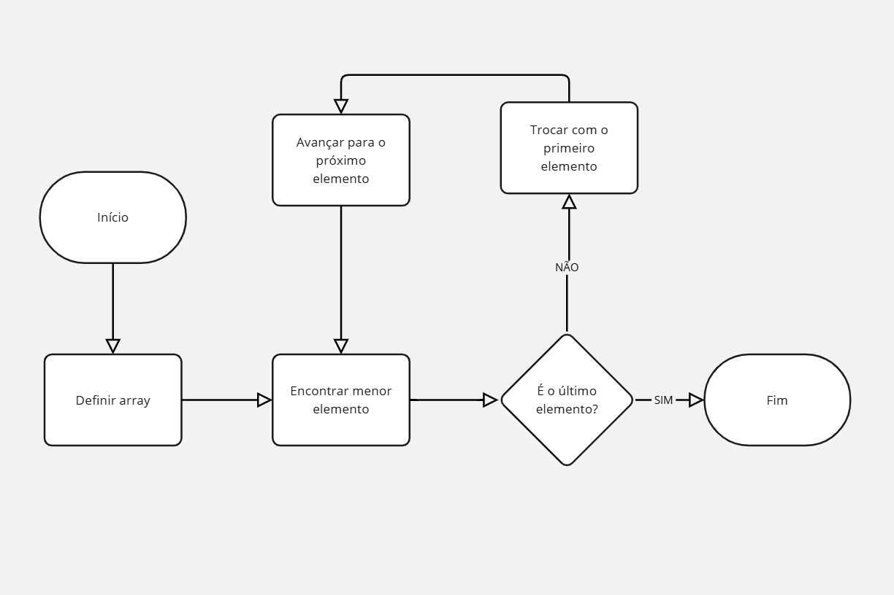

Fluxogramas
O que e Fluxogramas?
Fluxogramas são representações gráficas de algoritmos, sistemas ou processos. Eles são usados para ilustrar a sequência de ações ou decisões necessárias para realizar uma tarefa. Em um fluxograma, cada passo do algoritmo é representado por um símbolo específico, e as setas indicam o fluxo de execução.
Simbologia Fluxograma
Os fluxogramas usam símbolos específicos para representar operações de um processo. O oval (ou elipse) indica o início e o fim. O retângulo é usado para um processo ou ação, como cálculos ou atribuições. O losango representa uma decisão, com opções baseadas em uma condição. O paralelogramo é usado para entrada/saída, como ler ou imprimir dados. O círculo é um conector, usado para ligar partes do fluxograma. O retângulo com bordas duplas representa uma pré-definição ou subprocesso. O paralelogramo invertido indica armazenamento de dados, como salvar valores em variáveis.
Fluxogramas - Lucidchart
O Lucidchart é uma ferramenta online para criar fluxogramas e diagramas. Com ele você pode arrastar formas como retângulos (ações), losangos (decisões) e ovais (início/fim) para construir seu fluxograma, conectando-as com setas.
Exemplos de Fluxograma de bubble sort, insertion sort e selection sort


